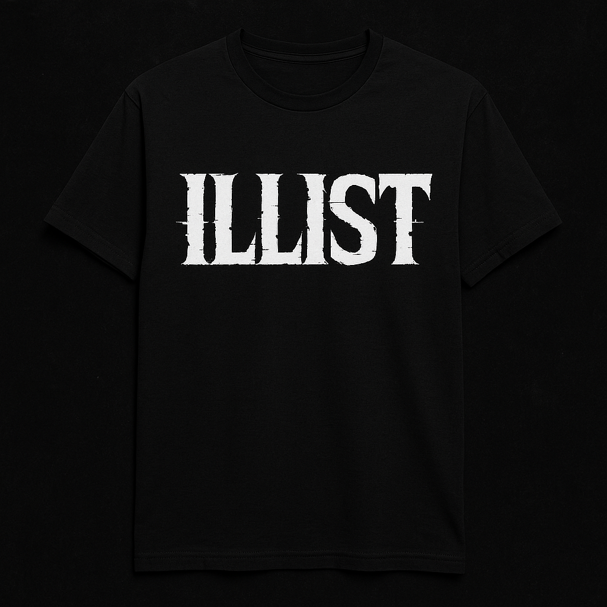
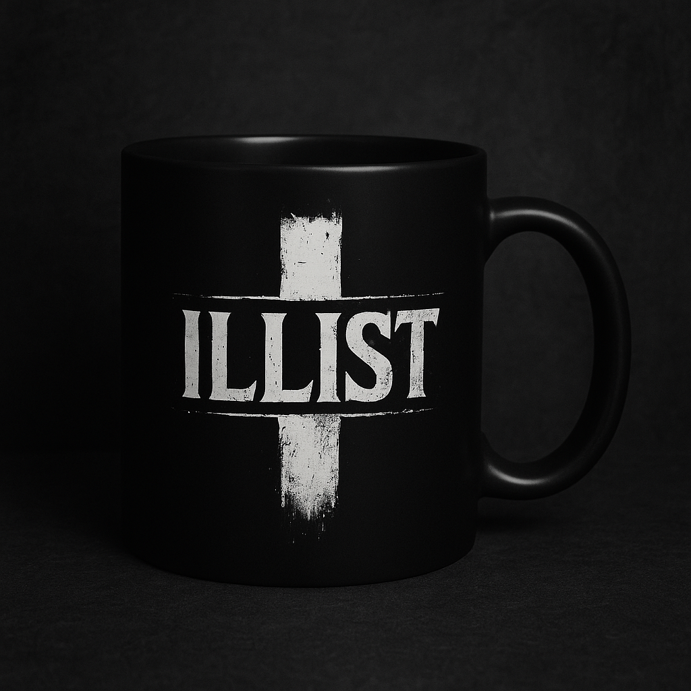
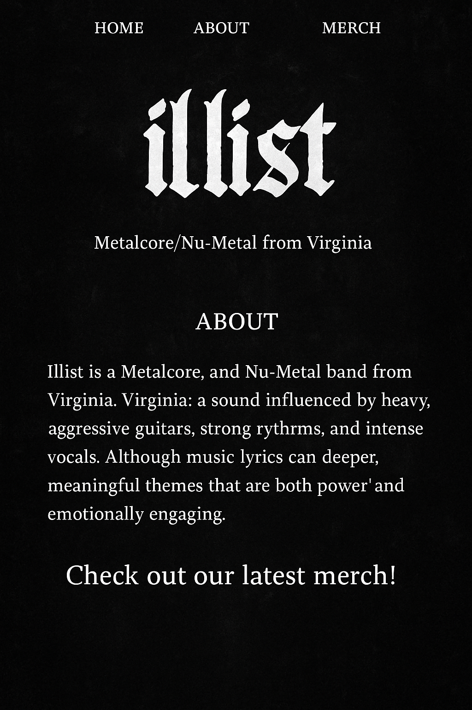

Illist is a metalcore/nu‑metal band rooted in Virginia. The project began in 2017 as the brainchild of drummer Cecil Johnson (formerly of BoughtXBlood) and quickly grew from a studio project into a full‑fledged band. An early article from The Metal Resource noted that the band spent months shaping their sound and introduced the first line‑up: Micah Elias (vocals), Jerod Folk (guitar), Taylor Youstra (bass) and Cecil Johnson (drums).
The band released its debut single “Padlock” in February 2018 and followed it with the equally intense “Life Leech.” Authenticity has always been at the heart of Illist’s music: songs like “Padlock” and “Life Leech” confront the pain of religious trauma, toxic relationships and other struggles through raw lyrics and crushing breakdowns. In August 2019 the band returned with “What I’ve Never Felt,” a single that blended heavy riffs with melodic hooks and featured production from Zach Jones. In a press announcement for the single, vocalist Micah Elias explained that the song describes the moment when someone who has worn a false identity decides to accept who they truly are.
After a period of writing and self‑reflection, Illist re‑emerged with new music in 2024–2025. Songs such as “Hollow,” “Malfunction,” “God’s Land,” “Sonder” and “Glass House” introduced a new active‑rock and nu‑metal dynamic while staying true to the band’s metalcore roots. The Spotify artist page describes Illist as a metalcore/nu‑metal band from Culpeper, Virginia with around 1.7 k monthly listeners and highlights the singles “Glass House,” “Sonder” and “Malfunction.”

Vocals
Founding member and primary lyricist. Micah’s voice moves effortlessly from guttural screams to soaring clean melodies. On Instagram he can be found at @illist_micah.
Guitar
Carson joined Illist during the band’s 2024 revival. His riffs balance nu‑metal groove with metalcore aggression. Social: @carsonsekol.

Bass
Tyler’s heavy bass lines anchor Illist’s rhythm section. Fans might recognize him from behind‑the‑scenes videos; his social handle is @mr_tylerjames.

Drums
A dynamic drummer from Norfolk, Virginia. Yanni has collaborated with Micah on drum videos and brings a hip‑hop influenced groove to the band. Find him at @yanniallen.
Past members: Illist’s early formation included guitarist Jerod Folk, bassist Taylor Youstra and drummer Cecil Johnson.
Below are some of Illist’s key releases. Dates are approximate based on available information and may evolve as new music is released:
Keep up with Illist on social media and streaming platforms: